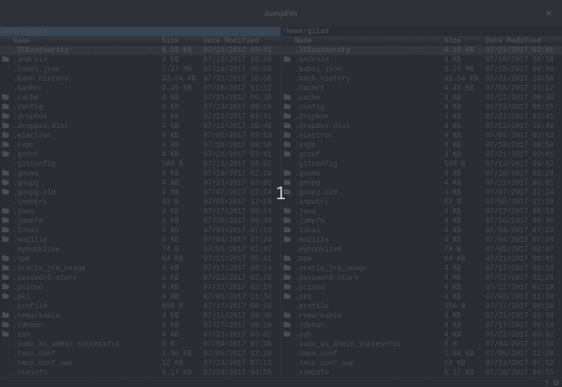

JumpFm
A file manager that lets you jump

About
JumpFm is a minimalistic dual panel file manager (currently released only for Linux) that lets you navigate your file system
very efficiently.
Jumping
Press j to jump directly to your favorites folders. No manual bookmarking is needed,
JumpFm will learn where you want to go.
Filtering
Press f to quickly find the files you are looking for.
Flat Mode
Press r and all directories are gone. Press it again to bring them back
Keyboard Shortcuts
Alert
There are no confirmation dialogs in JumpFm, whenever you hit the DEL key a file is gone.
| power tools |
| j |
open the jump dialog |
| f |
open the filter box |
| r |
toggle flat mode |
| h |
show/hide hidden files |
| l |
show files with same extension |
| navigation |
| ctrl+home |
go to home directory |
| tab |
switch panel |
| up |
move cursor up one line |
| page up |
move cursor up 10 lines |
| down |
move cursor down one line |
| page down |
move cursor down 10 lines |
| home |
move cursor to start |
| end |
move cursor to end |
| enter |
enter a directory |
| backspace |
move one directory up |
| alt + right |
forward history |
| alt + left |
backward history |
| ctrl + right |
open directory in right panel |
| ctrl + left |
open directory in left panel |
| ctrl + s |
swipe panels |
| selection |
| shift + up/down |
selects current file and move |
| space |
toggle selection |
| ctrl + a |
select all |
| esc |
deselect all |
| file operations |
| F2 |
rename file |
| F4 |
edit file |
| F5 |
copy selected files |
| F6 |
move selected files |
| F7 |
new folder |
| Shift + F4 |
new file |
| del |
delete selected files |
| p |
copy full path of current file to clipboard |
| miscellaneous |
| ctrl + = |
increase font size |
| ctrl + - |
decrease font size |
| ctrl + 0 |
reset font size |